Custom / unbranded
Your dimensions · your own piece library
Create straights, matching radius families, borders and lane changers. Set surface width and slot spacing independently.
Open Custom TrackBrowse 10 manufacturer libraries or create your own named track pack.
Different model scales are supported. Every piece uses its actual physical dimensions in millimetres; scale does not resize the road. Each system has its own connector family.
Named sets containing all of their track pieces.
Your dimensions · your own piece library
Create straights, matching radius families, borders and lane changers. Set surface width and slot spacing independently.
Open Custom Track

1:32 / 1:24 · 83 drawings · 24 geometry models
All track-bearing products and associated borders on Carrera 2024 pages 88–90, 94–95, 97–98, plus 20515 and selected legacy 20516/30344.
Browse Carrera Evolution / Digital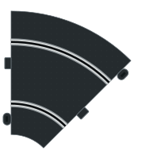
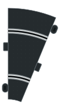
1:32 · 39 drawings · 12 geometry models
Core 1:32 Sport/Digital track and borders on 2016 catalogue pages 60–61, checked against available current manufacturer product pages.
Browse Scalextric Sport / Digital

1:32 · 43 drawings · 23 geometry models
Modern Policar 1:32 track, borders, lane changer, power/timing assemblies and track-mounted hardware listed on the manufacturer site and catalogue pages 28–39.
Browse Policar

1:32 · 49 drawings · 30 geometry models
Panel 07 labels its 200 mm road SC-10105, also used there for an R2 inner border. Panel 04 and the starter-set inventory identify the road as SC-10005; the latter is used.
Browse ScaleAuto Pro Track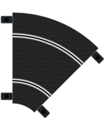
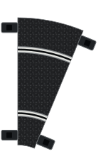
1:32 · 48 drawings · 13 geometry models
Ninco publishes outer radii 241.37–961.37 mm. Comparison charts round to 242–962 mm; this pack retains Ninco’s values.
Browse Ninco Classic / N-Digital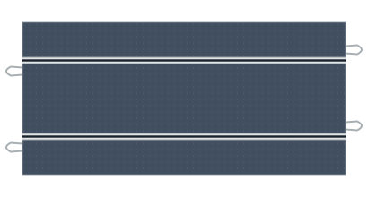
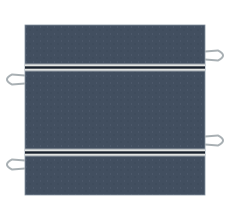
1:32 · 36 drawings · 0 geometry models
Road width, slot spacing, radii, connector moulds and border footprints remain unresolved. All SVGs are identification illustrations; no snapping or lane-length geometry is enabled.
Browse SCX Universal / Classic / Advance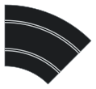
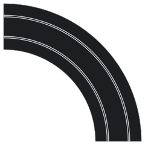
HO / 1:64 · 17 drawings · 10 geometry models
This pack models modern Tomy/AFX connectors. Vintage Aurora A/FX has different connectors and is excluded; no direct compatibility is claimed.
Browse AFX Racing / Tomy

1:43 · 19 drawings · 7 geometry models
Lengths and identities use Carrera documents; width, spacing and R1/R2 road-edge diameters use independent published measurements. Exact mould tolerances are not established.
Browse Carrera GO!!!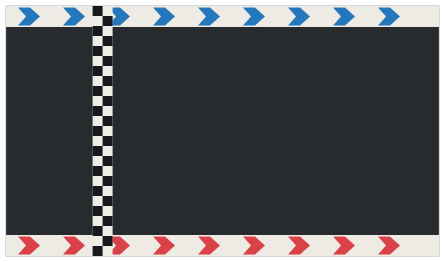
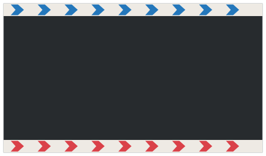
1:50 · Slotless · 11 drawings · 0 geometry models
Approximate visual planning with magnetic road ends and PDF piece counts. Separate left/right surfaces; no invented slot routes.
Browse Carrera Hybrid

1:32 · 15 drawings · 6 geometry models
The catalogue dimensions road edges, not slot centres. This nominal model assumes two centred slots 90 mm apart in the 180 mm road. Per-lane lengths remain estimates until independently measured.
Browse Fleischmann Auto-Rallye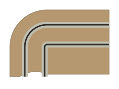
Your slots · your table · your construction profile
Editable straights and circular corners, 1–8 lanes, braid or tape, table guides and material estimates.
Open Routed TracksSupport varies by piece. SCX and Carrera Hybrid are reference-only. Other special pieces may also have reference artwork: you can place it with adjustable approximate planning magnets and export piece counts, without calculated slot lengths. Sources, assumptions and measurement gaps are recorded in each catalogue.